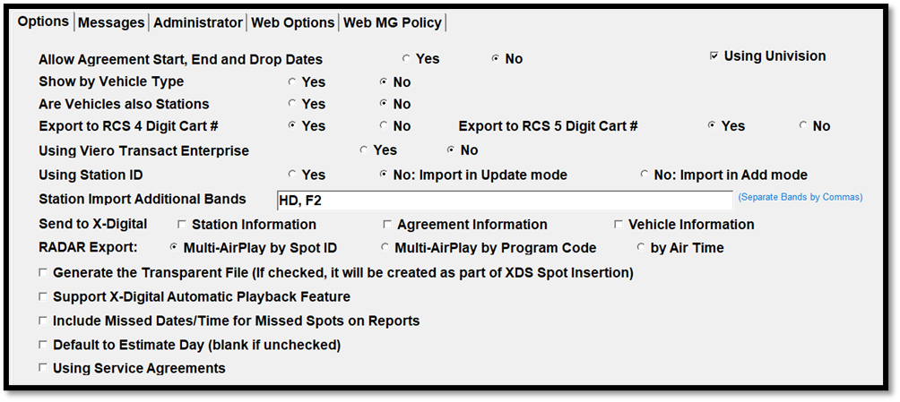

Options Tab
The Options tab which is used to set up general system options.

- Allow Agreement Start, End and Drop Dates: Every agreement automatically has two date fields - the “On Air Date” and “Last Date on Air”. This setting is used if you also want to use agreement start and end dates and drop dates added to the two dates already shown on each agreement. Normally, the Agreement Start Date will be the same as the On Air Date, but the dates may differ if the station is late getting on the air due to equipment problems, for example. Similarly, the Agreement End Date would normally be the same as the Late Date to Air, but the dates may differ if the station or network drops affiliation early. The Drop Date offers another way to end the affiliation without changing either of the previous dates mentioned.
- Using Univision: This option should be checked on if the Univision Export/Import is used.
- Show by Vehicle Type: When set to Yes, this will indicate the first initial of the vehicle type (such as C: for Conventional and A: for Airing) in front of the vehicle name in certain screens such as the Affiliate Agreements and Affiliate Affidavits.
- Are Vehicles also Stations: This should only be set to Yes if your vehicles are also radio stations. Certain selectivity will be turned off on reports, such as the Spot Clearance, Program Clearance reports, depending on how the question is answered.
- Export to RCS 4 Digit Cart #, Export to RCS 5 Digit Cart #, Using Viero Transact Enterprise: These questions should only be set to Yes if using RCS or Viero Transact.
- Using Station ID: This setting determines if the Station ID feature is used.
- When set to Yes, each station must have a unique Station ID defined on the Stations screen. Station IDs can be obtained from your data service provider, such as Act 1, BIA or M Street. Once you enter the Station ID, your system will import all added (new) stations, and update any changes made to those stations already imported, by matching on the ID number.
- When set to No, there are two ways of importing station data. The option “No: import in update mode” will import information for existing stations only, and new stations will not be added. When set to “No: import in add mode” and the station import is run, only new stations will be added and existing stations will not be updated. For more information on this import, please see the Affiliate Import help document that is available on the Counterpoint website.
- Station Import Additional Bands: If bands other than FM and AM need to be imported by the Station Information Import, those bands can be entered in this field. Type in each band as shown in the picture above, with each band separated by a comma. (Note: FM and AM do not need to be entered in this field. Only bands other than FM and AM that also need to be imported.) After the additional bands have been entered and saved, when stations with those bands are detected during the Station Import, those stations will be added or updated as needed. Stations with bands that are not FM or AM or one of the additional allowed bands will continue to be bypassed during the Station Information import process. (Version 7.1 and above.)
- Send to X-Digital: The send to X-Digital options allow additional information to be sent to X-Digital including Station Information, Agreement Information and Vehicle Information. For more information on setting up X-Digital, please see the X-Digital section of the Affiliate Exports help document.
- Radar Export: Multi-AirPlay by Spot ID, Multi-AirPlay by Program Code, by Air Time: When the Spot ID option is selected, multiple air plays of a single spot will result in the air play count getting incremented as shown on the Radar export (this is the only method available on version 7.0 and earlier). When the Program Code option is selected, on the Radar export, spots with the same program code (as defined on the Radar screen) that air in different breaks will result in the air play count getting incremented as if they were repeated air plays of a single spot, whether they are a single spot or not. When the Air Time option is used, the data is exported by air time, and column 3 and 4 are set based on the air time using special custom rules, as outlined in the Radar export section in the Affiliate Exports help document. The Program Code and Air Time options are only available on version 7.1 and above.
- Generate the Transparent File: This option, when checked, creates eight XML files with advertiser, agency, contract, DMA, ISCI, station group, station, and unit information.
- Support X-Digital Playback Feature: If checked, the X-Digital record and playback feature will be enabled, allowing you to time shift programming automatically. This setting will also cause a playback question to appear in the Agreements Pledge screen.
- Include Missed Dates/Time for Missed Spots on Reports: Not yet implemented.
- Default to Estimate Day (blank if unchecked): When this option is checked on, when entering estimated days and times on the Affiliate Agreements screen for ROS agreements, the estimated day will default to the feed day. When this option is not checked on, the estimated day will be defaulted to a blank value.
- Using Service Agreements: Service Agreements are a special type of agreement that gets exported to X-Digital but is ignored by most of the affiliate reports. Spots from Service type agreements get marked as Posted and Compliant automatically when the log gets generated. If Service Agreements are used, this checkbox must be checked on. (This Site Options setting is on Version 7.1 and above.)
- Using Network Website: If web version 3 is used, then this checkbox is shown on this tab, and is used for activating or deactivating the CSI Electronic Affidavit website.